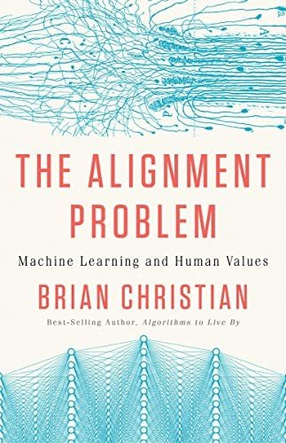
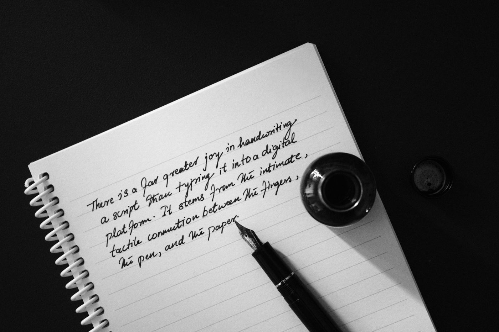

Pick a page. The arm will bring it to you.Loading the arm…
02 / PROJECTS
about me
I'm Keith, a computer engineering student at NJIT.
I am from Kampala, Uganda, and my interest in computer engineering developed alongside my interests in biology and ethics. I am particularly interested in how machines can extend human capabilities, and in the conditions that determine whether they are useful to the people expected to rely on them.
These interests have informed my work on gaze-controlled robotics, gesture recognition on microcontrollers, and machine learning research. Working within the memory and processing constraints of these systems has also made me more interested in computer architecture, as the capabilities of a model are dependent on the hardware available to implement it. I am consequently exploring hardware research alongside my work in AI.
exploring hardware research at NJIT
developing OmniRing, a gesture ring with a 4 KB neural network
open to internships in computer architecture, digital design, embedded systems, and ML systems
180+ students at the school supported by Urban Arbor
interactive demo
Gaze-controlled object selection
This simulation demonstrates the selection process used in Gaze Arm, the project with which my team won the Viam robotics hackathon. After calibrating with the three dots, look at the pink cube, blue can or green ball for about a second to select it; the simulated arm will then place it in the tray. Calibration is limited to three positions because this demonstration only distinguishes left, centre and right. You can also select an object by keeping your pointer over it.
loading the robot…
Video is processed in your browser. The webcam switches off after each pick or after 45 seconds of inactivity. This simulation uses the open-source SO-ARM100 model by The Robot Studio and Google DeepMind (Apache 2.0).
projects
Projects and research
hardwaresoftwareresearch
hardwaresoftware Nov 2026
SoundScope
Sound localization, captions and searchable event history.
A ringing phone provides a useful indication of its location, but this assumes that the person looking for it can distinguish the direction of the sound. I built SoundScope to represent that direction visually, using a Seeed reSpeaker XVF3800 microphone array and an Orbbec Gemini 2 depth camera. The direction estimate is derived from differences in the time at which sound reaches each of the four microphones, while the camera provides the corresponding image and depth measurements of visible surfaces.
I added an event history that retains audio, images and location estimates, allowing a query such as did my phone ring? to be associated with a recorded event. Muse Voice Transcribe provides speech captions, while Muse Spark 1.3 assists with the interpretation of spectrograms and camera crops, and with searching the saved events. An optional SAM 3.1 pass outlines a visible candidate. The contribution of these models is contextual; the direction itself is estimated from the microphone signals.
This distinction is necessary because the presence of an object along an estimated direction does not establish that it produced the sound. Reflections, quiet sources and simultaneous sounds can also compromise localization, and the system remains a prototype. To keep the microphone array and camera in fixed positions relative to each other, I designed and printed an adjustable carrier that accommodates variations in their dimensions.
Python · signal processing · RGB-D · Meta Model API · 3D-printed hardware · code ↗
Assembly model of the adjustable v3 carrier. Camera and microphone shapes represent the dimensions of the Gemini 2 and reSpeaker XVF3800; the tripod is omitted. Download the carrier model · Model notes
interactive demo
Sound direction simulation
browser simulation
The SoundScope carrier stands on a tripod on the desk, beside a laptop, facing a furnished room. Selecting the alarm clock, kettle, boombox or television plays its sound: each of the four simulated microphones receives a slightly delayed copy, and the direction is estimated from those delays, as on the device. The panel on the right shows what the carrier's camera sees, with the direction drawn over it. Objects can be dragged to new places, including behind the sofa. In the guessing game, a sound plays from a hidden position and you mark where you think it is before SoundScope's estimate is shown.
loading the room…
01 / PLAY A SOUND
01 / FIND THE HIDDEN SOUND
You
—
SoundScope
—
02 / CHANGE THE CONDITIONS
03 / SEARCH EVENTS
Session event history
Play a sound above to start a history. Nothing is recorded from your microphone.
IN THIS BROWSER
This demonstration computes geometry and timing differences locally, using synthesized sounds and labels determined by your selection. Search uses a limited local vocabulary, and the demonstration does not access your microphone, upload data or call Meta's models.
ON THE PHYSICAL DEVICE
The physical application estimates direction from captured audio and combines it with Gemini 2 images and depth. Meta's models provide captions, candidate descriptions and search over saved events, although identifying a visible candidate does not confirm that it produced the sound.
hardwaresoftware Sept 2026
Gaze Arm
Winner, Viam "Fine Motor Skills" robotics hackathon
My interest in gaze control was partly informed by a visit to a children's home in Kampala, where a boy with cerebral palsy tried to give me a fist bump and his nurse helped me understand what he was communicating. At the Viam hackathon, I proposed a robot arm that could receive instructions through gaze, potentially allowing someone with limited hand mobility to select and retrieve an object. Looking at an object selects it for pickup, while looking at an empty position specifies where to place it. Gaze input is obtained through the laptop's webcam.
I implemented gaze calibration, selection logic and grasp checks, while my teammate developed the object detector and depth pipeline. The checks account for the possibility that an intended user may be unable to physically intervene: the gripper can only close once the arm has settled within 5 mm and 2° of its target, and lifting requires reported contact. Targets beyond the arm's 700 mm reach are rejected before motion begins. If a condition is not satisfied, the system stops and waits for assistance.
My research at NJIT has involved machine learning for optical image restoration and gaze estimation, with more recent exploration of hardware research. These projects have required me to consider both the information available to a model and the computational constraints under which it is implemented.
hardware Oct 2026 – now
Hardware research
I began exploring two hardware labs at NJIT in October 2026, with the intention of understanding their respective research areas before committing to one. This work is still at an introductory stage.
software Mar 2026 – now
Gaze estimation with a depth camera
This project investigates whether the inclusion of depth information can improve screen-based gaze estimation, particularly when the model is applied to people not represented in its training data. The proposed setup pairs an Intel RealSense D435 with a research-grade Tobii eye tracker. I have developed the colour-only PyTorch pipeline using a public webcam dataset, with provision for depth once the D435 recordings are available. Since depth has not yet been incorporated, any improvement from its inclusion remains to be established. The work is ongoing and unpublished, and auditing the training data is necessary to assess what the model's performance actually demonstrates.
software Sept – Dec 2025
Optical deconvolution
My first research project at NJIT concerned optical deconvolution, for which I studied Fourier optics and developed a complex-valued neural network. The implementation and an interactive demonstration are described below.
software VAST Builders Challenge, NYC · Oct 2026
ZoneLogic & Occlusive Logic
I built ZoneLogic independently in one day at the VAST Builders Challenge in New York. The system allows a user to define a region within a fixed camera view and specify the conditions under which detections in a video archive should constitute an incident. A car remaining on a crosswalk for three seconds, for example, can produce a timestamped ticket with evidence for review.
Occlusive Logic extends these conditions through Boolean relationships between detected objects. A rule such as person AND car in the crosswalk can identify a situation that warrants review as a possible near miss, although the detections alone do not establish that one occurred. Similarly, NOT person describes an absence of detections, which cannot be assumed to indicate an absence of people. These limitations informed the inclusion of human review for every incident.
COCO-SSD detects objects in the video within your browser. Drag the zone's corners to change the region being evaluated. A false → true rule transition records an incident and snapshot, subject to a five-second cooldown. Footage: Mixkit.
hardware TinyML · Aug 2026 – now · in progress
OmniRing
I am developing OmniRing as a gesture-based computer interface in which hand movements are measured by a six-axis motion sensor, rather than inferred from camera images. The sensor is sampled at 100 Hz, and a neural network running on the microcontroller classifies the resulting motion.
The implementation is constrained by the memory available on a Seeed XIAO nRF52840 Sense, whose Arm Cortex-M4F reads the IMU over I2C. Quantization to 8-bit integers reduces the model to approximately 4 KB, with a 1.4 KB memory arena for inference. These constraints have contributed to my interest in embedded machine learning, since the model has to operate within the device's available memory. The project remains in development while I assess gesture reliability before using it to control other functions.
~4 KB int8 model
1.4 KB memory arena
100 Hz × 6 axes
C++ · Edge Impulse · TensorFlow Lite Micro
draw a gesturea circle, side to side, up and down, or barely move
x and y velocity of your stroke
This browser demonstration classifies pointer movements using features of the drawn stroke. It illustrates gesture input, but does not use the physical motion sensor or the trained OmniRing network.
researchsoftware NJIT · Sept – Dec 2025
Optical deconvolution
This project investigated the restoration of optical images affected by depth-dependent blur. I trained a 54.6k-parameter complex-valued neural network using experimental data comprising 1024×1024×128 samples per depth across nine depths, with the intention of recovering image detail degraded during acquisition.
Since I had not previously studied Fourier optics, the implementation required learning how the optical model related to the experimental data. I modelled the propagation of a 455 nm beam, corrected a bracket error in the beam-width formula, and generated Wiener-filtered training targets. The spatial dimensions were reduced to 512² to accommodate training on a laptop GPU, reducing the corresponding data memory requirement by 75%. The demonstration below implements the Wiener filtering step through a two-dimensional FFT in the browser.
Python · PyTorch · NumPy FFT · MATLAB data
blur, then Wiener deconvolution
blurred + noise · restored ·
Test target: USAF 1951 resolution chart (Wikimedia Commons, CC BY-SA 2.5). PSNR is measured against the sharp chart.
software Aug 2025
Einstein, a tutoring chatbot
I built Einstein using Gemini 2.5 Flash, LangChain and Gradio to structure explanations around a student's existing understanding. It first asks what the student knows, uses that response to guide the explanation, and then provides a practice problem through which the student can apply the concept.
how do I integrate x·eˣ?
Before we start: have you used integration by parts?
I built this robot for a first-year engineering project, learning the necessary circuitry and completing the assembly independently within a week when my teammates were unable to meet. The robot uses an Arduino Uno and an ultrasonic sensor, with C++ control logic that redirects it when it detects an obstacle ahead.
background
Education and experience
Aga Khan High School, Kampala
My high school studies included independent research, student leadership and community projects.
Ngamba Island
I volunteered at the chimpanzee sanctuary, assisting with feeding, habitat cleaning and enrichment activities.
Minister of Sports
As a student council member, I organized 26 school-wide events and subsequently mentored my successor.
Urban Arbor
I led this Pro Bono Environment project, with a target of planting 100 trees in Kampala.
Hospital laboratory internships
During high school, I interned at Lancet Laboratories and the Joint Clinical Research Center, working on blood tests for malaria and HIV.
Independent research
I conducted a high school study of the microbial properties of five common herbs.
Centurion Media
As a sales and marketing intern, I prepared cost estimates for design and fabrication jobs.
NJIT
Computer Engineering, Albert Dorman Honors College. I built my first robot that March.
Optics research
I began investigating complex-valued convolutional neural networks for optical deconvolution.
Student Senator
I was elected to represent Computer Engineering in the Student Senate.
Gaze estimation research
I began developing a gaze estimation pipeline, with planned integration of depth information.
Educational Opportunity Program tutor
I taught 50 incoming students through NJIT's Educational Opportunity Program.
Viam hackathon · Edge AI · IEEE
My team won the Viam robotics hackathon with Gaze Arm. I also completed Edge Impulse's Edge AI for Microcontrollers specialization and became an IEEE Outreach Officer.
VAST Builders Challenge · hardware research
I built ZoneLogic independently in one day at the VAST event in New York and began exploring hardware labs at NJIT.
Internship opportunities
I am seeking an internship in computer architecture, digital design, embedded systems or machine learning systems. Contact me.
service
Community involvement
Pro Bono Environment · project leader · 2023 – now · started in high school
Urban Arbor
Through Pro Bono Environment, I led Urban Arbor, a project with a target of planting 100 trees in Kampala. The first planting took place at the Kampala School for the Physically Handicapped, which serves more than 180 students. We planted 20 trees and provided gardening tools, ergonomic equipment and sanitary supplies worth 860,000 UGX, with support from Stanbic Bank, Finca Verde, Roofings Ltd and Kampala Capital City Authority.
After the planting, we stayed for a picnic with the students under the mango trees.
20 of 100 trees planted
New Jersey, 2025
My volunteering included teaching residents at a care home to use FaceTime to call their grandchildren, clearing debris from a community garden, caring for therapy animals at Spring Reins of Hope, and removing invasive plants at Somerset County Park.
Ngamba Island, 2022
During high school, I volunteered at the Ngamba Island chimpanzee sanctuary on Lake Victoria, where I helped feed the rescued chimpanzees, clean their habitats and prepare enrichment activities.
IEEE · Senate · EOP
As an Outreach Officer for NJIT's IEEE branch, I find industry speakers for our students. I also represent more than 200 computer engineering students in the Student Senate, and through the Educational Opportunity Program I taught 50 incoming students mathematics, physics, English and Python.
interests
Outside engineering
Running
I am working toward a 10 km time below 40 minutes, which requires maintaining an average pace of just under four minutes per kilometre across the full distance.

Reading
I am reading Brian Christian's The Alignment Problem, which examines how the behaviour learned by a machine learning system can differ from the behaviour its designers intended, and the consequences of those differences.
Cooking
I enjoy cooking and experimenting with different preparations.

Writing
I have written stories since I was six, and I am now developing a fictional universe of my own.
Contact
I am seeking internships in computer architecture, digital design, embedded systems and machine learning systems, where I can develop my technical understanding through practical work. I would also be happy to discuss the implementation, limitations or further development of any of the projects described here.